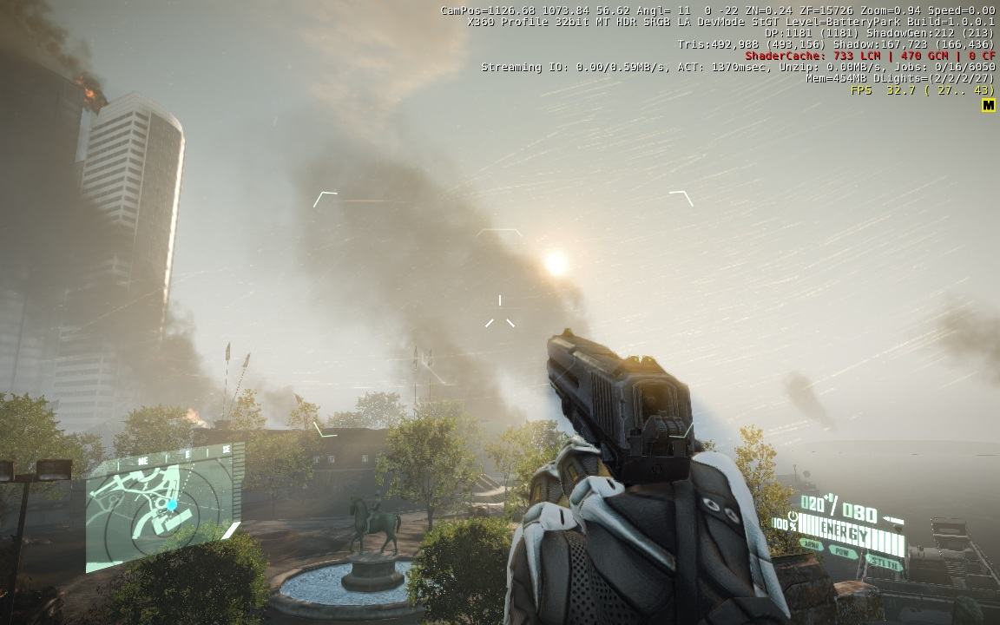
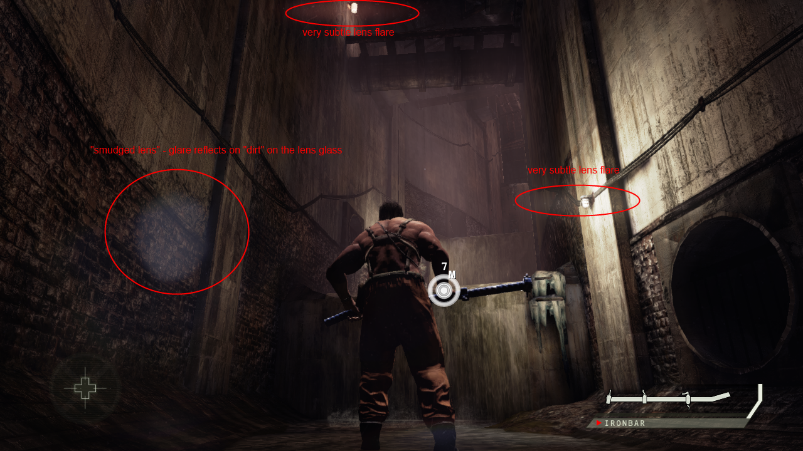
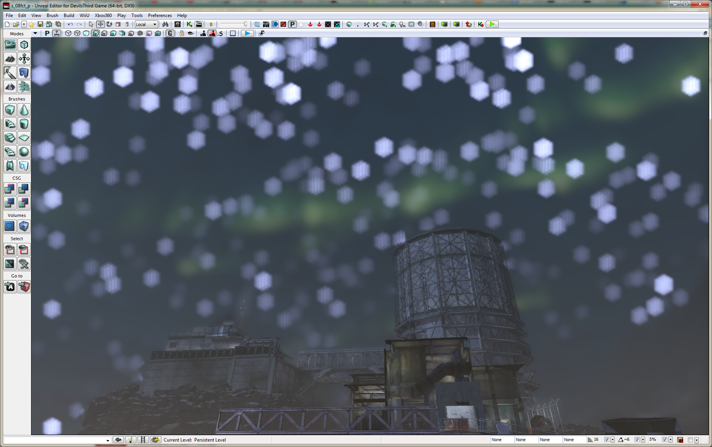

Graphics Engineer
[グラフィック エンジニア]
Portfolio
© 2015 Christian Helmich
What's a Graphics Engineer and what's it do?
[グラフィック エンジニアのなぜなに]
Graphics Engineer?
Graphics/3D/Render(ing) engineer/programmer/developer, or any combination of these terms, cover the same position.
Responsibilities:
- Visual Quality
- Render Performance
Graphics Engineer?
- develop the renderer, ie. the parts that:
- translate data (3D models, aka vertex data, 2D textures, aka pixel data) to something visible on screen.
(This process is called Rendering) - does this rendering process very fast (30-60 or mote times per second, at best)
- apply lights and shadows to the visible data, so it looks stylish or real
- apply post-processing filters to the rendered images, so they look better
- translate data (3D models, aka vertex data, 2D textures, aka pixel data) to something visible on screen.
Graphics Engineer?
Covers many fields:
- mathematics:
- linear algebra: 3D position, movement, projection
- image algebra: image feature extraction, noise reduction, image enhancement
- physics, optics, photography
- light propagation
- camera model
Graphics Engineer?
Covers many fields:
- art, cinematography
- visual style
- cinematographic visual effects (motion blur, lens flares)
- and software engineering
- writing the code that does all of this
- and does it fast
Graphics Engineer?
Requires cooperative teamwork:
- with artists:
- create visual style
- assist artists in making things look good
- with game designers:
- support gameplay through visual cues
- influence of graphics on gameplay and vice versa
- cinematic designers:
- support immersion
- make stunning in-game cutscenes possible
Graphics Engineer?
- Advances in Real-time rendering have been huge in the last 25 years, and continue to improve steadily
- so have and do the players expectations
- Good graphics are responsible for higher sales, greater success.
How I see my job
- 8 years of career inside the games industry
- contribution to
- AAA console games
- high profile mobile games
How I see my job
Programmming: an "engineering craft"
- engineering methodology
- profiling
- analysis
- solution planning
- craft as based on experience
How I see my job
Programmming: an "engineering craft"
- craft: strive to produce high quality by iterative refinement
- core languages (C++, C#)
- shader languages (HLSL, GLSL, ...)
- script languages (Python, Lua, JavaScript, ...)
CRYENGINE 3
Crytek, 2009-2011
PC Xbox360 PS3
Custom Cel Shading
Issue
- client needs stylish head for his project
- "uncanny valley" if real
- -> anime stlye cel shading + outlines
Solution
- tweaked custom material
- tweaked custom shader
- tweaked scene lighting
- special pass for outlines
Custom shader
- texture-based lookup tables
- diffuse
- specular
- ambient best as gradient
Outlines
- several passes
- rim pass: normalmap dot(N, front facing vector)
- custom Laplace filter on
- depth/Z buffer
- normal buffer
- several blur + downsample passes on outline buffer
- recombination pass: bloom-like factors for smooth result
Custom Cel Shading
Licensee support: R&D
Custom Cel Shading
Licensee support: R&D

Comic style outlines
Licensee support: R&D
Crysis 2
Crytek, 2010-2011
PC Xbox360 PS3
Raindrops
Moisture droplets
Scratches

Scratches
Damage effect
Fog material
Fog material
At 15:54
Cloak material
Pinger attack
At 5:05
CRYENGINE mobile
Crytek, 2011
iOS Android
Results
after 1 month of development
Results
after 1 month of development
Results
after 1 month of development
Devil's Third
Unreal Engine 3
Valhalla Game Studios, 2012-2013
WiiU
Z-Range Cull
What is it for?
customizable characters come several parts:
- hair
- head
- head gear
- upper body
- lower body
(They're attached to the same skeleton, so animation-wise there is no issue here).
Issue
- Character hairdo
- "extravagant"
- "conflicts" with head gear
- sticks out from impossible places
Solutions?
- make hair and head gear mutually exclusive.
- This was a no-go for game design.
- modify the hair mesh at runtime, so it fits inside the head gear mesh.
- This would have required some time to engineer properly.
- Do not render hair when it conflicts with the head gear, at render time.
- This is our approach.
How does it work?
- draw a cull volume fitting the head gear before drawing hair,
- use this volume to cull hair pixels during their draw pass
- if they are inside this volume.
In detail
- back to front order
- with Z-testing on
- draw the Z component for back faces for the back faces of the cull volume into R channel of target
- draw the Z component for front faces into target G channel
In detail
During the hair render pass (special material with custom nodes):
- fetch RG from ZRC render buffer
- compare current fragment Z with RG
- if inside "volume": cull fragment
- else: draw fragment
Difficulties
- Technique relies strongly on culling volume's accuracy
- Culling volume mesh MUST fit head gear perfectly
- possible trick: upscale head gear mesh to some extend.
Edge cases
- Edge cases literally related to edge of the cull mesh
- could be overwriting underlying cull meshes
- resulting in in hair fragments not getting culled
- could be overwriting underlying cull meshes
Edge case correction
- enabled Z-writing to separate Z-buffer
- Z-testing
- keep farmost pixel for back faces
- keep closemost pixel for front faces
- -> extend the screen space ZRC volume to its maxima
- -> thus cover underlying geometries
Z-Range Cull (buffer)
Z-Range Cull (test)
Z-Range Cull (final)
Sharpening
Issue
- surfaces lacking detail
- mostly an art issue
- "Can we get this to look nicer without spending time on redoing it?"
Solution
- Lack of detail = lack of noise
- -> Augment visual noise
- -> "unblur" => sharpen
Sharpening
Extrapolation between
- blurred version of image
- buffer for DOF
- image istelf
- scene buffer
- blurred version of image
provide artistic control
Sharpening (off)

Sharpening (0.5)

Sharpening (1.0)

Sharpening (2.0)

Sharpening (5.0)

Eye adaptation
Issues
- Contrast rich scenes
- Bright outsides
- Middle American location
- Dark insides
- Few indoor lights for ambiance
- Bright outsides
- No middle ground for luminance
- Hinders gameplay
Solution
- pretend we have a camera with eye adaptation
- i.e. automatic aperture adjustment
- turn dark locations less dark
- turn bright locations less bright
Technique
- downscale scene buffer to 128x128, luminance only
float luma = dot(color.rgb, luma_factors); - downscale luminance buffer down to 1x1
- 5 steps: 64x64, 32x32, 16x16, 4x4, 2x2
- readback the final pixel
- direct memory read on WiiU: fast
- use luminance value to interpolate
- "aperture"
- "exposure"
Technique
- eye adaptation is "progressive"
- over several frames
luma = lerp(last_luma, current_luma, factor * dT); - factor around 0.7
- over several frames
Technique
- camera "aperture"/"exposure" not controllable
- instead:
- min-range-max luminance for interpolation factor
- ip factor controls
- scene (de)saturation
- scene color grading (tone mapping)
- scene brightness factor
Eye Adaptation (off)
Dark environment
Eye Adaptation (on)
Dark environment
Eye Adaptation (off)
Bright environment
Eye Adaptation (on)
Bright environment
Glare
Lens flares
Issue
- Bloom is nice, but
- not realistic
- round
- looks old
- want something better
Solution
- Anisotropic lens flares
- lengthy shape
- more realistic
- cinema-style
Technique
- modify bloom pass to replace it by "glare"
- different sample offsets
- "compress" target horizontally when rendering
- "decompress" target when reading
- -> "linear" texture fetch will stretch result
- -> lengthy shape at less cost
Technique
- glare reflection
- point-symetrical reflection of above
- less intensive
Technique
- smudge to simulate dirty lens
- dirt texture
- visible only when hit by glare or reflection
- must be subtle for realism
Glare reflection buffer

Glare reflection final
Glare reflection final
Improved glare (off)
Improved glare (on)
Improved glare (on)
Improved glare (off)
Improved glare (on)
Improved glare (on)

Improved glare (off)
Improved glare (on)
Improved glare (off)
Improved glare (on)

Glare (off)
Glare (on)
Improved Lens Flares
Improved Lens Flares
Improved Lens Flares
Improved Lens Flares
Improved Lens Flares
Improved Lens Flares
Improved Depth of Field
Issue
- Gaussian blur DOF
- 2-pass, 9 samples each
- looks OK, but slow on WiiU
- we can do better/faster
Solution
- reduce samples
- change sample factors
- gaussian "mean"
- luminance contribution
- dark samples contribute less
- different offsets
- hexagonal DOF "en vogue"
Hexagonal DOF
Hexagonal DOF

Hexagonal DOF
Hexagonal DOF
Hexagonal DOF

Hexagonal DOF
Hexagonal DOF

Hexagonal DOF

Hexagonal DOF
Hexagonal DOF

Grunge look
Colour grading + Lens scratches

global illumination
approach for randomly generated stages
Issue
- mutliplayer stages composed of:
- static terrain
- statically placed buildings
- dynamically placed buildings
Issue
- dynamically placed buildings
- fixed areas
- randomly chosen
- randomly rotated
- user-generated content
- therefore "random"
Issue
- UE3 uses pre-baked lightmaps
- computation takes aeons
- impossible to get similar result at runtime
- without 3rd party software
Solution
- mix static lightmaps
- with run-time generated textures
- primary illumination
- secondary illumination (bounce)
- occlusion
Solution
- render-to-cubemap object
- placed in scene
- renders all 6 cube faces into cubemap
Custom render
- customized (subclassed) UE3 class
- write into 3 cubemaps
- primary (direct) illumination and secondary (bounce) illumination
- a smaller and blurred cubemap of the above
- a cubemap containing the depth information (Z) of its surroundings.
- write into 3 cubemaps
Custom render
- building material uses
- direct cubemap for reflection
- blurred cubemap for illumination
- Image-based lighting style
- depth cubemap for occlusion
- the closer, the darker
Custom render
- player material updated to closest cubemaps
- when moving into trigger volume
Magna Memoria
CasualCore
Gameloft, 2014-2015
iOS
Magna Memoria
Japan release on 28.5.2015
Resume
© 2015 Christian Helmich
自己PR
ゲーム業界にて8年間、AAA系コンシューマゲームや知名度の高いモバイルゲームの開発に尽力してきました。 私のプログラミングにおけるポリシーとして、C++やシェーダ言語、スクリプト言語を用いて常に簡潔でクオリティの高いコードを生成することに努めています。 また、CGデザイナーとグラフィックス•エンジニアが協力し合う事により、お客様の興味をそそるようなゲームの ビジュアル•スタイルが生まれると思います。 御社の今後のプロジェクトにて、唯一のビジュアル•スタイルを作成するために自分のスキルを提供することを楽しみにしています。 宜しくお願い致します。
Career overview
- late 2006: Diploma of Applied Computer Science, University of Duisburg-Essen
- 2007: Engine and gameplay Programmer, Independent Arts Software
- 2008: Software Engineer, Acadis
- 2009: Jr. Programmer, Crytek (Licensing team)
- 2010: Jr. R&D Graphics Programmer, Crytek (Crysis 2 R&D team)
- 2011: Graphics Programmer, Crytek (CryEngine mobile team)
- 2011-2013: Graphics Programmer, Valhalla Game Studios (Devil's Third team)
- 2014-2015: Sr. Developer, Gameloft Tokyo (Magna Memoria team)
Games and projects
- 2006: KAGEfx - Meta-data shader framework (Diploma thesis)
- 2007: Paws & Claws Pet Resort (Wii)
- 2008: Musiic Party (Wii)
- 2008: KAGEfx for Tucan (PC)
- 2009: CRYENGINE 3 (PC, PS3, Xbox360)
- 2010: Crysis 2 (PC, PS3, Xbox360)
- 2011: CRYENGINE mobile (iOS, Android)
- 2011-2013: Devil's Third (PC, PS3, Xbox360, WiiU)
- 2014-2015: Magna Memoria (iOS)
Paws and Claws: Pet Resort Wii
"Meine Tierpension"
Independent Arts Software, 2007-2008
Wii
Paws engine (Wii)
3rd person camera control system
- field-mode (free control) and inside-mode (fixed angle)
- collision and obstruction check
character control system
Post-processing effect system (used for Bloom)
Texture utilities:
- render-to-texture
- screenshot tool
- in-game video render tool
ポーズエンジン
3Pカメラシステム：
- 主に建物内・野外でのカメラの動きについて担当。
- 最小限の動きでカメラをオブジェクトを避けながら移動するプログラミング。
インプット：キャラクター主体(目線から)のカメラのポジショニング
ポストプロセスエフェクトシステム：
- ブルーム
テキスチャーツール：
- レンダリングをテキスチャに書き込む
- スクリーンショット
- ビデオをゲーム中で撮影
Musiic Party Wii
"Bandleader"
Independent Arts Software, 2007-2008
Wii
Bandleader engine
Spline/bone-attached camera control system
imposter system for crowd rendering
Post-processing effect system
- used for Bloom
- color inversion
build system to semi-automatically create new QA release bundles
Bandleader エンジン
カメラワークシステム：カメラをスプライン通りに動かす
- スプラインシステム（Catmul-Rom用だが、基本的どんなスプライン計算でも可）
- カメラアタッチ：カメラをキャラクターの決まった関節に焦点を当てる
レンデリング：インポスターを見せる
ポストプロセス：
- ブルーム
- 色反転
ビルドシステム：自動的に新しいバージョンを作って、デバグに送る。
Bandleader game logic
3D menus with carousel selection
Drum minigame
Quick-time event system for in-game "special moves"
Bandleader ゲームロジック
メニュースクリーン：ゲーム内の楽器選択・次ステージを選択
ミニゲーム：ドラムゲーム（楽譜通りに演奏する）
クィックタイムイベントシステム：ゲーム内にボーナスの為にリモコンを振る
KAGEfx for Tucan
Acadis, 2008
PC
KAGEfx for tucan
refactoring tucan's rendering engine to OpenGL 2+
- adding support for shaders by using Diploma thesis project "影KAGEfx"
- improving KAGEfx by rewriting its core
- OpenGL wrapping framework "globuli"
material shader library for tucan
「tucan」用の「KAGEfx」
「tucan」のレンダーエンジンのをOpenGL 2以上へアップデート
- シェーダテクノジ使用の為、卒業理論のプロジェクトの「影KAGEfx」を使い
- 「影KAGEfx」の完全書き直し
- 「globuli」と言うOpenGLラッパーの開発
「tucan」用のマテリアリシェーダーのライブラリー開発
CRYENGINE 3
Crytek, 2009-2011
PC Xbox360 PS3
CRYENGINE 3 SDK Development
code integration from R&D branch
- source code testing, documentation and simplification
preparing tradeshow demos
automatizing code tests, regression tests
CRYENGINE 3 SDK 開発
R＆Dブランチからソースコード統合
- ソースコードのテスト、保守、簡素化
イベントデモ用フィーチャ開発：GDC、CEDECなど
品質保証とテストのオートメーション
CRYENGINE 3 SDK Licensee support
supporting licensees via forum
writing source code tutorials, usage tutorials, documentation
licencee oriented R&D and feature development
- anime/toon shader, outline shader
- geometry modification (eg. putting a hole at random locations in the green for a golf simulator)
- simulating fire spread in engine room for serious games
CRYENGINE 3 SDK ライセンス対応
- ライセンスの客さん用のBBS上でサポート
ソースコードチュートリアル、使い方チュートリアル、ドキュメンテーション著作
ライセンスの客さん用カスタム化開発
- アニメ系シェーダ, アウトラインのポストフィルター
- ジオメトリー更化
- 火の燃え広がりと消火シミュレーション" 対応
Crysis 2
Crytek, 2010-2011
PC Xbox360 PS3
CRYSIS 2 Additional R&D
Glass material shader with water density simulation via fog
Cloak effect material shader
environmental effects on camera lens
- rain drops, moisture droplets, scratches
game play damage feedback
optimization for console targets (PS3, Xbox360)
CRYSIS 2 Additional R&D
霧（フォグ）エフェクトのマテリアルシェーダ
クロークエフェクトのマテリアルシェーダ
カメラ上に置ける雨や湿気の環境ポストフィルター
ゲーム内のダメージインパクト、ヘルスを表現するポストフィルター
Xbox360とPS3向けのシェーダとレンダラの最適化
CRYENGINE mobile
Crytek, 2011
iOS Android
CryEngine mobile renderer development (hybrid renderer)
- porting CyEngine3 shaders to mobile
- post-processing filter framework
- lighting shader for deferred rendering pass
- material shader for forward rendering pass
- adding support for mobile graphics (OpenGL ES 2.0)
CryEngine mobile レンダラ開発
- モバイルグラフィックス（OpenGLES 2.0）向け開発
- フォワード•レンダリングのマテリアルシェーダ
- ディファード•レンダリングのライティングシェーダ
- ポストフィルターフレームワーク
- シェーダ開発：CryENGINE3シェーダーをモバイルプラトフォーム向けに変更
CryEngine mobile tools development
- texture converter to PVRTC
- shader pipeline: Cg to GLSL
- build system
CryEngine mobile ツール開発
- テキスチャ：PVRTCへのエキスポート
- シェーダパイプライン：CgからGLSLに訳すツール
- ビルドシステム保守
CryEngine mobile video streaming solution
streaming from PC running CryENGINE3 to mobile device
- server-side video compression (JPG, MP4) and
client-side video decompression
server-side audio packaging
client-side audio rendering
client-side control capturing
- server-side control input via network command stream
CryEngine mobile ビデオストリーミング
PC版CryENGINE3からビデオやサウンドをストリーミングで送り、スマフォン・タブレットで表示
- server-side video compression (JPG, MP4) and
client-side video decompression
server-side audio packaging
client-side audio rendering
client-side control capturing
- server-side control input via network command stream
CryEngine misc work
Crysis 2 - DirectX11 support
unanounced game "Aquarium": renderer and shader customization
- SSDO (screen space directional occlusion) as improvement over SSAO
- SSRLR (screen space local reflection) as material shader
CryEngine misc work
「Crysis 2」のDirectX11対応
無発表ゲーム「アクァリアム」にて、 レンダラとシェーダのカスタム化：
- SSDO（スクリーン•スペース•ディレクショナル•オクルージョン）
- SSRLR（スクリーン•スペース•リアルタイム•ロカル•リフレクション）のマテリアルシェーダ
Devil's Third
Oblivion Engine
Valhalla Game Studios, 2011-2012
PC Xbox360 PS3
Devil's Third
THQ Oblivion Engine
- post-processing filters:
- Depth of Field
- Motion blur
- SSAO (screen space ambient occlusion) improvements
- SSBN (screen space bent normals) as a way of doing directional occlusion
- colour grading
- eye adaption
Devil's Third
THQ Oblivion エンジン
- ポストフィルター：
- デプズ•オフ•フィールド、
- モションブラ、
- SSAO（スクリーン•スペース•アンビエント•オクルージョン）、
- SSBN（スクリーン•スペース•ベント•ノルマル）
- カラーグレード
- 現時代コンシューマハード向けの最適化 (Xbox360, PS3)
Devil's Third
THQ Oblivion Engine
material BRDF shaders
- Blinn-Phong (plastic materials)
- Cook-Torrance (specular highlights)
- Kajiya-Kay (hair highlights)
- Oren-Nayar (rough materials)
- Ward (anisotropic highlight for metals)
optimization, unification and refactoring
Devil's Third
THQ Oblivion エンジン
マテリアルシェーダ・リアルなBRDFの開発：
- Blinn-Phong (plastic materials)
- Cook-Torrance (specular highlights)
- Kajiya-Kay (hair highlights)
- Oren-Nayar (rough materials)
- Ward (anisotropic highlight for metals)
レンダラのリファクトリング、統合化
Devil's Third
Unreal Engine 3
Valhalla Game Studios, 2012-2013
WiiU
Devil's Third
Unreal Engine 3
Engine customization and optimization:
- displaying damage as blood layer on character
- liquid decals flowing downwards on horizontal and vertical surfaces
- character customization system (swappable body parts)
- Depth Range Culling (ZRC) to fit hair parts below helmet parts
- global illumination approach for randomly generated stages
shader and renderer optimization for WiiU
tools pipeline and editor customization
Devil's Third
Unreal Engine 3
エンジンとレンダラのカスタム化：
- ゲーム内のダメージ表現がマテリアルに影響するシステム
- キャラクターカスタム化システム
- Z-range cull（Z深度圏以内に置けるエレメントを間引く: キャラクターのふさふさな髪の毛をヘルメットに合わせる為）
- グローバル イラミネーション
WiiU向け最適化
Devil's Third
Unreal Engine 3
new or improved post-processing filters:
- glare and anisotropic lens flare
- radial blur, motion blur
- colour grading
- hexagonal depth of field blur
- automatic "eye adaptation"
porting material BRDF from previous engine
Devil's Third
Unreal Engine 3
新たなポストフィルター開発：
- グレアやレンズフレア、
- ラジアルブラ、モーションブラ、
- カラーグレード
- 六角形デプズ•オフ•フィールド•ブラ
- 自動的な暗順応
ツールのカスタム化：
- デザイン側で必要となったシェーダやBRDFの開発、
- シェーダノード開発、
- カメラ、シーンのポストフィルター接待メニュ
Magna Memoria
CasualCore
Gameloft, 2014-2015
iOS
Magna Memoria
- Technical Vice-lead
- code architecture and design decisions
- overviewing task completion
- mentoring Junior developers
マグナメモリア
- 副リード
- プログラム作成と設計
- 作業完成概要
- ジュニアプログラマー育成・指導
Magna Memoria
Prototypting in Unity3D
Architecture planning
Game logic development in C#/Linq
- Tile matching
Shaders for prototype
Magna Memoria
プロトタイプ開発：Unity3D
構造のプランニング
C#/Linqでゲームロジックをプロトタイプ開発
シェーダ開発
Magna Memoria
CasualCore
- Engine customization, optimnization
Integrations from master branch
64 bit (arm64) support
Renderer features
- "Photoshop" Blend modes for Flash renderer
- Support for Webp, MNG, JNG texture formats
- Renderer performance improvements for low-end devices
Magna Memoria
ゲームロフト内部エンジン：CasualCore
- エンジンに対するカスタム化と最適化
- CasualCoreマスターブランチからフィーチャ統合
- 64bit （arm64）対応
- レンダラフィーチャ:
- Flashブレンドモード、
- Webp, MNG, JNGテキスチャ対応
- レンダラパフォーマンス改善 、最適化
Magna Memoria
Game logic
data-driven "gacha" lottery system
- outcome can be customized by changing data only
- based on probability mathematics
WebView that blends into the Flash game UI
Asset build pipeline
- export tools
- static web page generator based on Markdown (using Python and Jinja2 templates)
Magna Memoria
Game logic
- 確率論を基にしたデータドリベン的なガチャシステム
ゲームUIと混ぜたウェブビュー
アセットビルド
- エキスポートツール、パイプラインの開発
- ウェブページ作ツールの開発
This presentation was generated through SOL with a Jinja2 template for Reveal.js.
© 2015 Christian Helmich